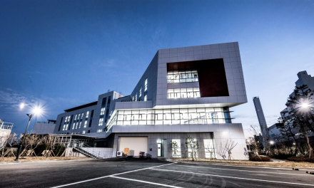

SUSTAINABILITY
Environmental
- Climate change
risks ·
Opportunity
factors -
Based on ISO 14001, 45001, and best practices for ESG, Dongbu Corporation is periodically analyzing impacts due to climate change factors.
By this, we will minimize risks associated with climate crisis while expanding business opportunities.
| Division | Seriousness to the company |
Financial effects related to climate change | ||
|---|---|---|---|---|
| Risk factors | Opportunity factors | |||
| Natural factors |
Natural disaster (flood, heavy snow, etc.) | High |
|
|
| Global warming | Medium |
|
|
|
| Social factors |
Emergence of ESG management | Medium |
|
|
| Increased government regulations | High |
|
|
|
| Change in clients’ needs | Medium |
|
|
|
-
Biodiversity
protection
activities -
To execute green management to protect the environment while taking the lead in practicing relevant measures, Dongbu Corporation is making a concerted effort to minimize negative impacts on biodiversity which occur in the course of business activities. We are performing environmental assessments before performing constructions, identifying protected species around the workplace such as endangered species and preserving natural monuments, and establishing and performing measures to preserve or protect habitats.
Major site activities contents
| Site name | Legally protected species | Contents of activities | ||
|---|---|---|---|---|
| Amphibians/Reptiles | Mammals | Birds | ||
| Incheon Geomdan District 3-1 | Narrow-mouthed Toad (Level Ⅱ) | - | - |
|
| Wolgot ~ Pangyo 1 | Narrow-mouthed Toad (Level Ⅱ) | - | - |
|
| Northern shore protection at Saemangeum New Port | - | Otter (Level Ⅰ) | Oystercatcher (Level Ⅱ) |
|
| Berthing facility at Saemangeum New Port | - | - | Oystercatcher (Level Ⅱ) Far Eastern curlew (Level Ⅱ) |
|
| Honam High Speed Railway 2-2 | - | Leopard Cat (Level Ⅱ) | Peregrine Falcon (Level Ⅰ) |
|
- Eco-friendly construction
-
To minimize environmental impacts, Dongbu Corporation is implementing measures to increase energy efficiency from the stage of design, extracting environmental impact factors of each process, and making efforts to reduce negative impacts that can occur in constructions.
Main improvement activities to reduce environmental impacts at sites
Site name Division Improvement activities Northern shore protection
at Saemangeum New Port
Berthing facility at Saemangeum
New PortMarine - Consideration of characteristics of waters, eco-friendly design and construction, and protection of fish stocks such as building sea forests
- Prevention of dispersion of suspended solids and preparation of preventive measures for oil accident
Honam High Speed Railway 2-2 Air - Installation of dust protection net connected to noise protection panels and installation of section sprinklers
- Operation of watering cart and installation of dust protection cover
Water quality - Installation of double silt protectors and sewage facilities, and operation of facilities to reduce nonpoint pollution
Wolgot ~ Pangyo 1 Air - Installation of water curtain and temporary grit chamber, and operation of IoT real-time watering system
Dongbu Corporation is making sincere efforts to minimize environmental impacts through G-SEED (Green Standard for Energy and Environmental Deign) in construction activities. G-SEED is a system that certifies constructions which contribute to saving energy and reducing environmental contaminations throughout all procedures such as design, construction, maintenance , and management. Constructions that received G-SEED for the 3 most recent years are as follows.
-
2020 Shinseocheon thermal power plant
Siheung Eungye District LH Complex 2 <신서천화력 종합사무소> -
2021 Juan Station Centreville / Magok Centreville
Banpo Centreville Asterium /
Bangbaejungang Centreville / Incheon Geomdan LH 20 <반포 센트레빌 아스테리움>
<반포 센트레빌 아스테리움>
-
2022 Magok Iljin Convergence R&D Center
Godeok Seojeongri Station Gyeonggi Happy Housing <마곡 일진 융복합 R&D 센터>
<마곡 일진 융복합 R&D 센터>